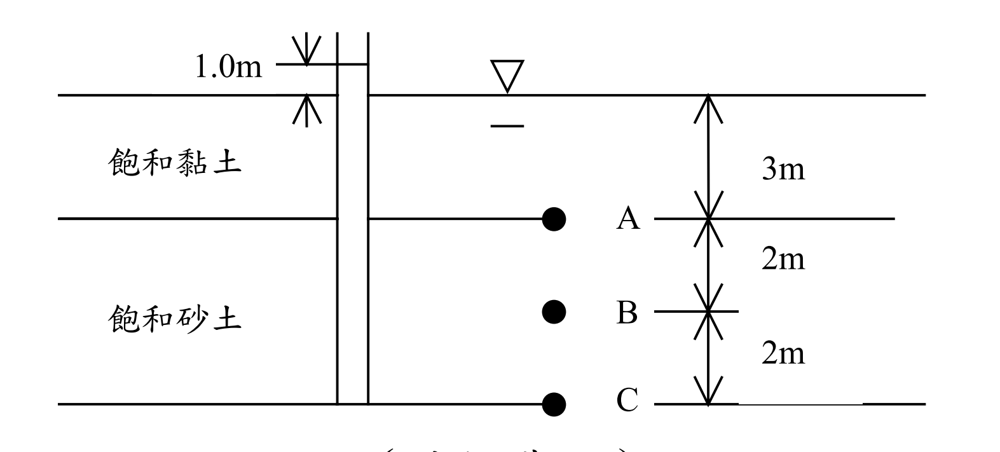

考題編號：SM-2009-3
主分類： SM-U1-4 土體內應力
副分類： SM-U1-2 土壤滲透、SM-U1-1 土壤基本性質
分析法： 有效應力法
標籤： 有效應力原理 總應力 孔隙水壓 受壓水層總水頭 三相關係 飽和單位重
1. 原始題目重述 (Problem Restatement)
某地層由飽和黏土層及下方之砂土層組成，地下水位於地表面。黏土之含水量 $\omega = 30\%$，孔隙比 $e = 0.8$；砂土之土粒比重 $G_s = 2.65$，含水量 $\omega = 18.5\%$。砂土層為一受壓水層，經由置於砂土層底部之水壓計測得該點之水頭高於地表面 1.0 m，如圖所示。試分別求砂土層之頂部、中間、底部，即 A、B、C 三點處之孔隙水壓力及垂直向總應力與有效應力。（25 分）

圖說：地層由上覆3m厚飽和黏土（$\omega = 30\%$, $e = 0.8$）與下伏4m厚飽和砂土（$G_s = 2.65$, $\omega = 18.5\%$）組成。地下水位位於地表面。置於砂土層底部（C點）的水壓計顯示水頭高出地表面 1.0m。要求計算砂土層頂部(A)、中間(B)、底部(C)三點的孔隙水壓、垂直向總應力與有效應力。
2. 考題核心精神與出題者意圖 (Core Concepts & Examiner's Intent)
本題主要測驗考生兩個核心概念：
- 土壤基本物理性質的換算：如何利用三相圖關係（飽和度 $S$、含水量 $\omega$、孔隙比 $e$、比重 $G_s$）求出地層的飽和單位重 $\gamma_{sat}$。
- 受壓水層中的孔隙水壓分布：受壓水層（confined aquifer）代表砂土層為高透水層，而上覆黏土層為阻水層（aquitard）。由於砂土層滲透性遠大於黏土層（$k_{sand} \gg k_{clay}$），水頭在砂土層內的垂直損失可忽略不計，因此砂土層內各點的總水頭（Total Head）皆相同，皆高於地表面 1.0 m。
出題者意圖確保考生不會單純套用靜水壓力公式 $u = \gamma_w z$，而是能根據受壓水層的總水頭來正確推算各深度的孔隙水壓，再結合總應力求出有效應力。
3. 解題戰略地圖與陷阱分析 (Strategic Roadmap & Trap Analysis)
解題步驟：
- 推算土壤單位重：
- 黏土層：利用 $S \cdot e = \omega \cdot G_s$ 找出未知的 $G_s$，再代入 $\gamma_{sat}$ 公式。
- 砂土層：利用 $S \cdot e = \omega \cdot G_s$ 找出未知的 $e$，再代入 $\gamma_{sat}$ 公式。
- 計算垂直向總應力 ($\sigma_v$)：依據深度逐層累加 $\gamma_{sat} \times \Delta z$。
- 判斷砂土層的水頭分布與孔隙水壓 ($u$)：
- 設定地表面為基準面（$z=0$），總水頭 $h = h_e + h_p$。
- 砂土層內部各點的總水頭均為 $h = 1.0 \text{ m}$。
- 壓力水頭 $h_p = h - z$（注意 $z$ 為負值），進而求出 $u = h_p \cdot \gamma_w$。
- 計算有效應力 ($\sigma_v'$)：利用有效應力原理 $\sigma_v' = \sigma_v - u$ 求解。
陷阱分析：
- 陷阱一：誤用靜水壓力計算孔隙水壓。 若忽略受壓水層特性，直接用 $u = \gamma_w z$ 計算，將導致 A、B、C 三點水壓低估，有效應力高估。
- 陷阱二：誤以為砂土層內有水流導致水頭隨深度線性遞減。 實際上砂土層透水性極大，內部無明顯水頭損失。題目雖只有 C 點有水壓計，但整個砂土層的總水頭均應視為一致（$h=1.0\text{m}$）。
- 陷阱三：黏土層 $G_s$ 未知。 需利用飽和條件（$S=1$）去反推黏土層的 $G_s$，才能求得單位重。
3.5 變數層次分析 (Variable Hierarchy Analysis)
最終目標
求出砂土層頂、中、底（A、B、C 點）之垂直向總應力、孔隙水壓及有效應力。
本題關鍵公式（依計算順序）
- 步驟 1：飽和度與基本物理量關係式 $G_{s,clay} = \frac{S \cdot e_{clay}}{\omega_{clay}}$ 與 $e_{sand} = \frac{\omega_{sand} \cdot G_{s,sand}}{S}$
- 步驟 2：飽和單位重公式 $\gamma_{sat} = \frac{\boxed{G_s} + \boxed{e}}{1 + \boxed{e}} \gamma_w$
- 步驟 3：總應力計算 $\sigma_v = \sum \boxed{\gamma_{sat}} \cdot \Delta z$
- 步驟 4：總水頭與孔隙水壓關係 $u = (h - z) \gamma_w$
- 步驟 5：有效應力原理 $\sigma_v' = \boxed{\sigma_v} - \boxed{u}$
L1：題目直接給定
| 符號 | 數值 | 說明 |
|---|---|---|
| $S$ | $1$ | 黏土與砂土皆飽和（$100\%$） |
| $e_{clay}$ | $0.8$ | 黏土孔隙比 |
| $\omega_{clay}$ | $30\%$ | 黏土含水量 |
| $G_{s,sand}$ | $2.65$ | 砂土比重 |
| $\omega_{sand}$ | $18.5\%$ | 砂土含水量 |
| $h_{sand}$ | $1.0\text{ m}$ | 砂土層的總水頭（以地表為基準） |
| $\gamma_w$ | $9.81\text{ kN/m}^3$ | 水的單位重（常數） |
L2：需知識點推導
1. 單位重推導
| 符號 | 公式／來源 | 卡關? |
|---|---|---|
| $G_{s,clay}$ | $G_{s,clay} = S \cdot e_{clay} / \omega_{clay}$ | |
| $e_{sand}$ | $e_{sand} = \omega_{sand} \cdot G_{s,sand} / S$ | |
| $\gamma_{sat,clay}$ | $\gamma_{sat,clay} = \frac{G_{s,clay} + e_{clay}}{1 + e_{clay}} \gamma_w$ | |
| $\gamma_{sat,sand}$ | $\gamma_{sat,sand} = \frac{G_{s,sand} + e_{sand}}{1 + e_{sand}} \gamma_w$ | |
2. 應力與孔隙水壓計算
| 符號 | 公式／來源 | 卡關? |
|---|---|---|
| $\sigma_v$ | $\sigma_v = \sum \gamma_{sat} \cdot \Delta z$ | |
| $u$ | $u = (h - z)\gamma_w$ | |
| $\sigma_v'$ | $\sigma_v' = \sigma_v - u$ | |
L3：深層知識（不懂就卡住）
| 知識點 | 說明 | 卡關? |
|---|---|---|
| 受壓水層水頭分布 | 高透水層（砂土）上下夾於弱透水層時，內部垂直水頭損失可忽略，總水頭視為常數。 | |
| 三相圖基本關係式 | $Se = \omega G_s$ 為連結土壤重量與體積性質最關鍵之橋樑，必須熟記。 |
4. 步驟化詳細計算過程 (Step-by-Step Detailed Calculation)
本解答統一採用國際標準單位制，取水的單位重 $\gamma_w = 9.81 \text{ kN/m}^3$。
(註：若使用公制單位 $\gamma_w = 1.0 \text{ t/m}^3$ 計算，數值將除以 9.81，兩者皆屬合理)
Step 1：計算兩地層之飽和單位重 ($\gamma_{sat}$)
1. 上覆飽和黏土層：
已知飽和度 $S = 1$、$e = 0.8$、$\omega = 30\% = 0.3$。
利用關係式 $S \cdot e = \omega \cdot G_s$，推得黏土的比重 $G_s$：
$$ G_{s(clay)} = \frac{S \cdot e}{\omega} = \frac{1 \cdot 0.8}{0.3} = 2.667 $$
計算飽和單位重：
$$ \gamma_{sat(clay)} = \frac{G_{s(clay)} + e}{1 + e} \gamma_w = \frac{2.667 + 0.8}{1 + 0.8} \times 9.81 = 1.926 \times 9.81 = \boxed{18.89 \text{ kN/m}^3} $$
2. 下伏飽和砂土層：
已知飽和度 $S = 1$、$G_s = 2.65$、$\omega = 18.5\% = 0.185$。
利用關係式 $S \cdot e = \omega \cdot G_s$，推得砂土的孔隙比 $e$：
$$ e_{(sand)} = \frac{\omega \cdot G_s}{S} = \frac{0.185 \times 2.65}{1} = 0.490 $$
計算飽和單位重：
$$ \gamma_{sat(sand)} = \frac{G_{s(sand)} + e_{(sand)}}{1 + e_{(sand)}} \gamma_w = \frac{2.65 + 0.490}{1 + 0.490} \times 9.81 = 2.107 \times 9.81 = \boxed{20.67 \text{ kN/m}^3} $$
Step 2：分析受壓水層之總水頭與各點之孔隙水壓 ($u$)
設定地表面為位置水頭（elevation head）的基準面，$z = 0 \text{ m}$。
題目指出砂土層底部（C 點）之水頭高於地表面 1.0 m，即 C 點的總水頭 $h_C = 1.0 \text{ m}$。
由於砂土層透水性遠大於黏土層，在穩定狀態下，可忽略砂土層內部的垂直水頭損失。因此，整個砂土層內各點的總水頭均維持常數：
$$ h_A = h_B = h_C = 1.0 \text{ m} $$
各點深度 $z$ 及壓力水頭 $h_p = h - z$（深度向下為負）：
-
A點（深度 3m）： $z_A = -3.0 \text{ m}$
$$ h_{pA} = h_A - z_A = 1.0 - (-3.0) = 4.0 \text{ m} $$
$$ u_A = h_{pA} \cdot \gamma_w = 4.0 \times 9.81 = \boxed{39.24 \text{ kPa}} $$ -
B點（深度 5m）： $z_B = -5.0 \text{ m}$
$$ h_{pB} = h_B - z_B = 1.0 - (-5.0) = 6.0 \text{ m} $$
$$ u_B = h_{pB} \cdot \gamma_w = 6.0 \times 9.81 = \boxed{58.86 \text{ kPa}} $$ -
C點（深度 7m）： $z_C = -7.0 \text{ m}$
$$ h_{pC} = h_C - z_C = 1.0 - (-7.0) = 8.0 \text{ m} $$
$$ u_C = h_{pC} \cdot \gamma_w = 8.0 \times 9.81 = \boxed{78.48 \text{ kPa}} $$
Step 3：計算各點之垂直向總應力 ($\sigma_v$) 與有效應力 ($\sigma_v'$)
-
A點（砂土層頂部，深度 3m）：
$$ \sigma_{v,A} = \gamma_{sat(clay)} \times 3.0 = 18.89 \times 3.0 = \boxed{56.67 \text{ kPa}} $$
$$ \sigma_{v,A}' = \sigma_{v,A} - u_A = 56.67 - 39.24 = \boxed{17.43 \text{ kPa}} $$ -
B點（砂土層中間，深度 5m）：
$$ \sigma_{v,B} = \sigma_{v,A} + \gamma_{sat(sand)} \times 2.0 = 56.67 + 20.67 \times 2.0 = 56.67 + 41.34 = \boxed{98.01 \text{ kPa}} $$
$$ \sigma_{v,B}' = \sigma_{v,B} - u_B = 98.01 - 58.86 = \boxed{39.15 \text{ kPa}} $$ -
C點（砂土層底部，深度 7m）：
$$ \sigma_{v,C} = \sigma_{v,B} + \gamma_{sat(sand)} \times 2.0 = 98.01 + 20.67 \times 2.0 = 98.01 + 41.34 = \boxed{139.35 \text{ kPa}} $$
$$ \sigma_{v,C}' = \sigma_{v,C} - u_C = 139.35 - 78.48 = \boxed{60.87 \text{ kPa}} $$
(若使用 $\gamma_w = 1.0 \text{ t/m}^3$ 計算，數值分別為：$u_A=4.0\text{ t/m}^2$、$\sigma_{v,A}'=1.778\text{ t/m}^2$；$u_B=6.0\text{ t/m}^2$、$\sigma_{v,B}'=3.992\text{ t/m}^2$；$u_C=8.0\text{ t/m}^2$、$\sigma_{v,C}'=6.206\text{ t/m}^2$)
5. 關鍵爭議點與進階探討 (Critical Issues & Advanced Discussion)
- 滲流造成的向上水力坡降：
本題地下水位於地表（總水頭 0 m），而下伏砂土層為受壓水層（總水頭 1.0 m）。這意味著水流會由砂土層透過黏土層往上滲流（upward seepage）。黏土層內的水力坡降為 $i = \frac{\Delta h}{L} = \frac{1.0}{3.0} = 0.333$。 - 在黏土層中，向上滲流會產生向上的滲流力（seepage force），降低有效應力。
-
A 點的有效應力計算，若由上覆土層向下推算，亦可視為：
$$ \sigma_{v,A}' = z \cdot \gamma_{clay}' - i \cdot z \cdot \gamma_w = 3.0 \times (18.89 - 9.81) - 0.333 \times 3.0 \times 9.81 = 27.24 - 9.81 = 17.43 \text{ kPa} $$
此結果與上述利用 $\sigma_v - u$ 的計算結果完全一致。實務計算中，先求算正確的孔隙水壓，再以 $\sigma_v - u$ 推算有效應力是最安全且不易出錯的方法。 -
砂土層的等水頭假設合理性：
題意指出「置於砂土層底部的水壓計測得該點總水頭」。在嚴謹的水文學中，若有垂向水流，水頭必定會有梯度的變化。然而砂土的滲透係數（$k \approx 10^{-2} \sim 10^{-4} \text{ cm/s}$）比黏土（$k < 10^{-7} \text{ cm/s}$）大數百乃至上千倍。在串聯滲流中，近乎全部的水頭損失（Head Loss）都會發生在黏土層。因此，將整個砂土層的總水頭視為常數 $h = 1.0 \text{ m}$ 是大地工程極為標準且合理的簡化假設。